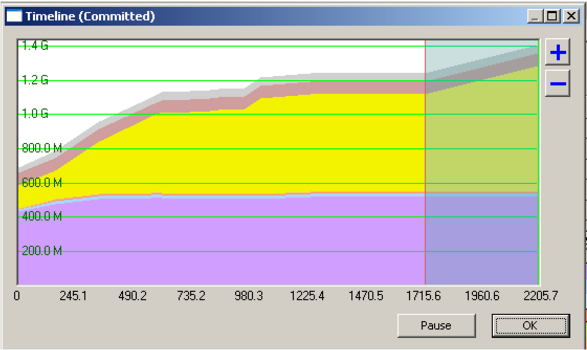
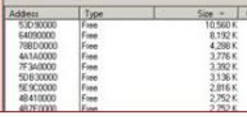

Troubleshooting Why ArcMap Hangs Up
Users were experiencing problems with ArcMap 9.3 hanging up or even crashing. I used a tool from Microsoft called VMMap, which allows you to analyze a process's virtual and physical memory usage. After many hours of research and testing, I was able to identify two problems. Issue #1 was a memory leak.

ArcMap 9.3 is a 32 bit application. Each session in a Citrix environment only gets a total of 2GB of address space. As memory approaches 1.4 GB, ArcMap becomes unstable and may hang up or even crash. The application was not cleaning up memory.

The second problem I identified was fragmented memory. Because the application was not releasing its unused memory, it became fragmented. In this screenshot you can actually see that free memory has been depleted.

This screenshot shows that the largest chunck of contiguous memory is only 10,560 K. ArcMap needs to use a contiguous chunk of memory. The available memory chunks are pretty small for being able to process large amounts of data.